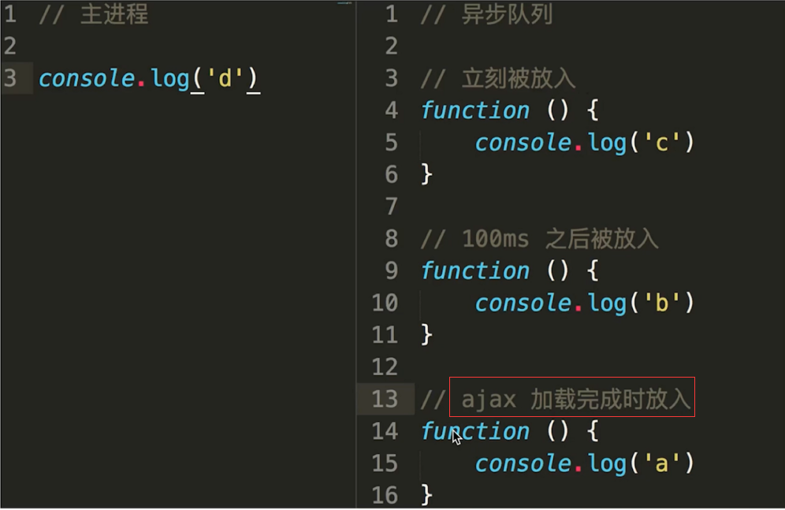

一、引子
本文介绍JavaScript运行机制，这一部分比较抽象，我们先从一道面试题入手：
console.log(1); |
这一题看似很简单，但如果你不了解JavaScript运行机制，很容易就答错了。题目的答案是依次输出1 2 3，如果你有疑惑，下文有详细解释。
二、理解JS的单线程的概念
JavaScript语言的一大特点就是单线程，也就是说，同一个时间只能做一件事。那么，为什么JavaScript不能有多个线程呢？这样能提高效率啊。
JavaScript的单线程，与它的用途有关。作为浏览器脚本语言，JavaScript的主要用途是与用户互动，以及操作DOM。这决定了它只能是单线程，否则会带来很复杂的同步问题。比如，假定JavaScript同时有两个线程，一个线程在某个DOM节点上添加内容，另一个线程删除了这个节点，这时浏览器应该以哪个线程为准？
所以，为了避免复杂性，从一诞生，JavaScript就是单线程，这已经成了这门语言的核心特征，将来也不会改变。
三、理解任务队列（消息队列）
单线程就意味着，所有任务需要排队，前一个任务结束，才会执行后一个任务。如果前一个任务耗时很长，后一个任务就不得不一直等着。JavaScript语言的设计者意识到这个问题，将所有任务分成两种，一种是同步任务（synchronous），另一种是异步任务（asynchronous）。同步任务指的是，在主线程上排队执行的任务，只有前一个任务执行完毕，才能执行后一个任务；异步任务指的是，不进入主线程、而进入“任务队列”（task queue）的任务，只有“任务队列”通知主线程，某个异步任务可以执行了，该任务才会进入主线程执行。异步任务包括宏任务和微任务(后面会重点介绍)，接下来我们通过两个例子说明同步任务和异步任务的区别：
console.log("A"); |
如果你的回答是A，恭喜你答对了，因为这是同步任务，程序由上到下执行，遇到while()死循环，下面语句就没办法执行。
console.log("A"); |
如果你的答案是A，恭喜你现在对js运行机制已经有个粗浅的认识了！题目中的setTimeout()就是个异步任务。在所有同步任务执行完之前，任何的异步任务是不会执行的，关于这点下文还会详细说明。
四、理解Event Loop
异步执行的运行机制如下：
- 所有同步任务都在主线程上执行，形成一个执行栈（execution context stack）。
- 主线程之外，还存在一个“任务队列”（task queue）。只要异步任务有了运行结果，就在“任务队列”之中放置一个事件。
- 一旦“执行栈”中的所有同步任务执行完毕，系统就会读取“任务队列”，看看里面有哪些事件。那些对应的异步任务，于是结束等待状态，进入执行栈，开始执行。
- 主线程不断重复上面的第三步。
主线程从“任务队列”中读取事件，这个过程是循环不断的，所以整个的这种运行机制又称为Event Loop（事件循环）。只要主线程空了，就会去读取“任务队列”，这就是JavaScript的运行机制。这个过程会循环反复。以下这张图可以很好说明这点。

五、哪些语句会放入异步任务队列及放入时机
一般来说，有以下四种会放入异步任务队列：
- setTimeout和setlnterval
- DOM事件
- ES6中的Promise
- Ajax异步请求
javascript 代码运行分两个阶段：
1、预解析——把所有的函数定义提前，所有的变量声明提前，变量的赋值不提前
2、执行——从上到下执行（按照js运行机制）
至于放入异步任务队列的时机，我们通过 setTimeout的例子和Ajax例子来详细说明：
//例题1 |
for循环一次碰到一个 setTimeout()，并不是马上把setTimeout()拿到异步队列中，而要等到一秒后，才将其放到任务队列里面，一旦“执行栈”中的所有同步任务执行完毕（即for循环结束，此时i已经为5），系统就会读取已经存放“任务队列”的setTimeout()（有五个），于是答案是输出5个5。
上面也提到，在到达指定时间时，定时器就会将相应回调函数插入“任务队列”尾部。这就是“定时器（timer）”功能。
关于定时器的重要补充：
定时器包括setTimeout与 setInterval 两个方法。它们的第二个参数是指定其回调函数推迟/每隔多少毫秒数后执行。
对于第二个参数有以下需要注意的地方：
- 当第二个参数缺省时，默认为 0。
- 当指定的值小于 4 毫秒，则增加到 4ms（4ms 是 HTML5 标准指定的，对于 2010 年及之前的浏览器则是 10ms）；也就是说至少需要4毫秒，该setTimeout()拿到任务队列中。
//例题2 |

ajax加载完成时才会放入异步队列，至于这段时间不确定，所有有两种情况：
- 大于100ms，最后的结果是 d c b a。
- 小于100ms，最后的结果便是d c a b。
六、微任务（Microtask）与宏任务（Macrotask）
我们上面提到异步任务分为宏任务和微任务，宏任务队列可以有多个，微任务队列只有一个。
- 宏任务包括：script(全局任务)，setTimeout，setInterval，setImmediate，I/O，UI rendering。
- 微任务包括：new Promise().then(回调)，process.nextTick，Object.observe（已废弃），MutationObserver（html5新特性）。
当执行栈中的所有同步任务执行完毕时，是先执行宏任务还是微任务呢？
- 由于执行代码入口都是全局任务 script，而全局任务属于宏任务，所以当栈为空，同步任务执行完毕时，会先执行微任务队列里的任务。
- 微任务队列里的任务全部执行完毕后，会读取宏任务队列中排最前的任务。
- 执行宏任务的过程中，遇到微任务，依次加入微任务队列。
- 栈空后，再次读取微任务队列里的任务，依次类推。

一句话概括上面的流程图：当某个宏任务队列的中的任务全部执行完以后，会查看是否有微任务队列。如果有，先执行微任务队列中的所有任务，如果没有，就查看是否有其他宏任务队列。
接下来我们看两道例子来介绍上面流程：
Promise.resolve().then(()=>{ |
最后输出结果是Promise1，setTimeout1，Promise2，setTimeout2。
- 一开始执行栈的同步任务执行完毕，会去查看是否有微任务队列，上题中存在(有且只有一个)，然后执行微任务队列中的所有任务输出Promise1，同时会生成一个宏任务 setTimeout2。
- 然后去查看宏任务队列，宏任务 setTimeout1 在 setTimeout2 之前，先执行宏任务 setTimeout1，输出 setTimeout1。
- 在执行宏任务setTimeout1时会生成微任务Promise2 ，放入微任务队列中，接着先去清空微任务队列中的所有任务，输出 Promise2。
- 清空完微任务队列中的所有任务后，就又会去宏任务队列取一个，这回执行的是 setTimeout2。
console.log('----------------- start -----------------'); |